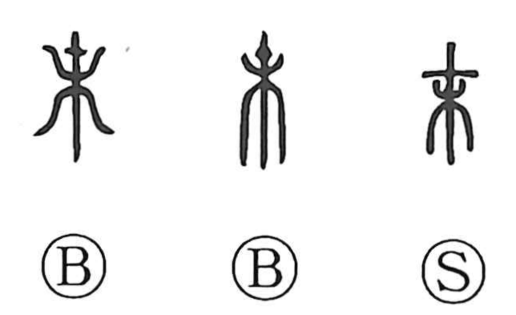

末

Kun: sue, shimo | On: matsu, batsu
end ・ tip ・ future ・ latter part ・ treetop
Explanation
末 adds an enlarged mark to the upper part of 木, a tree. The mark singles out the branch tips or treetop. It later becomes the long horizontal stroke above the rest of the tree.
From the tree’s extremity come a tip, an end, and the final part of something. The slender ends also suggest what is small, weak, or of secondary importance. 本 marks the base of the tree, while 末 marks its farthest growth. Together, 本末 compares the foundation with the end or the essential part with its extensions.